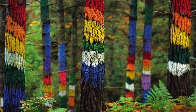
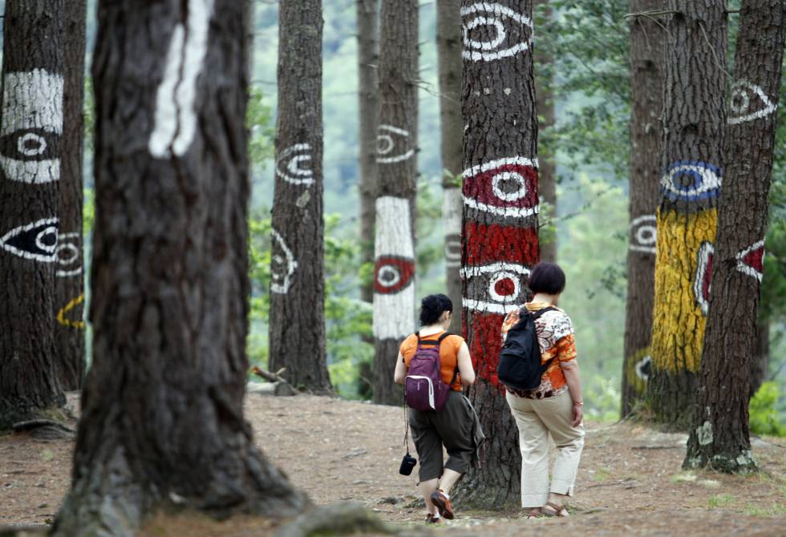

Bosque de Oma
El Bosque de Oma, una de las obras más conocidas del artista vasco Agustín Ibarrola, es una expresión del llamado "land art", corriente creativa que surge a finales de los años sesenta del siglo XX y que tiene como finalidad trasladar el trabajo artístico a la naturaleza, utilizando el paisaje como marco, soporte y materia prima para el artista.
Figuras que se crean y se transforman
Según vamos caminando por el Bosque, las figuras se crean, se componen ante nuestros ojos: en ocasiones la figura de un solo árbol tiene entidad en si misma, mientras que en otros casos es preciso observar el conjunto de varios árboles para comprender la obra. Y Además, la percepción de las figuras varía según el punto de observación: las figuras se transforman. En definitiva, una visita personalizada, en la que el artista consigue hacer al visitante protagonista de su obra.
ACTUALMENTE EL BOSQUE SE ENCUENTRA EN MANTENIMIENTO, ¡VUELVA OTRO DIA!
MENÚ
-
Página principal
-
Lugares de interés
-
Danos tu opinión
-
Otras páginas web:
-
Contacto
-
VOLVER